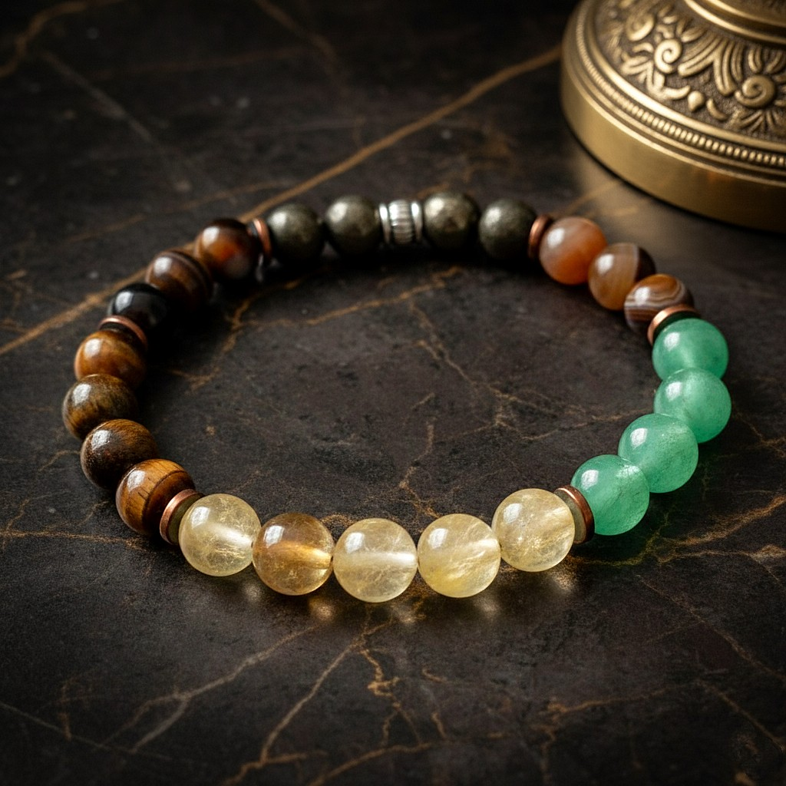
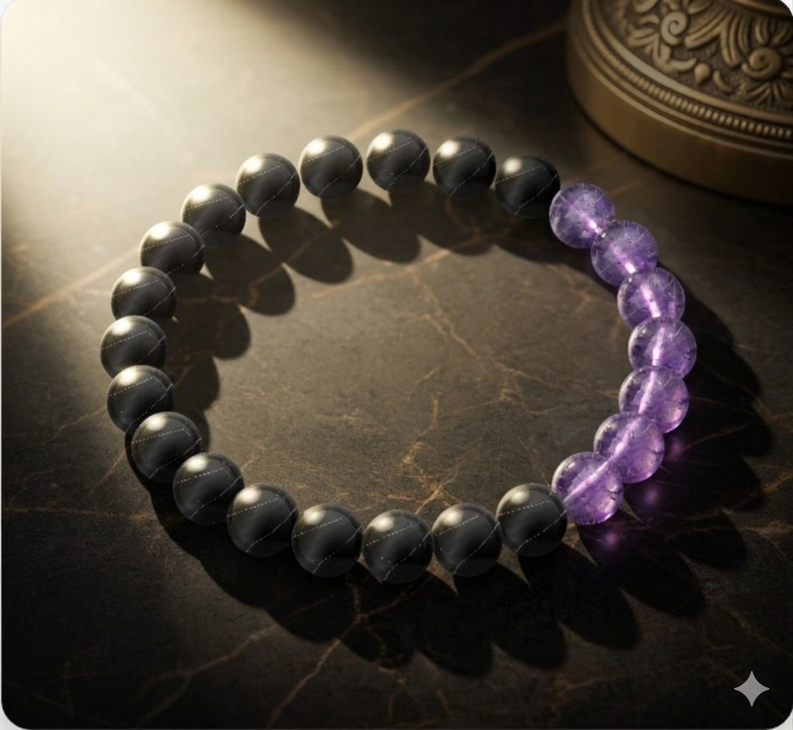
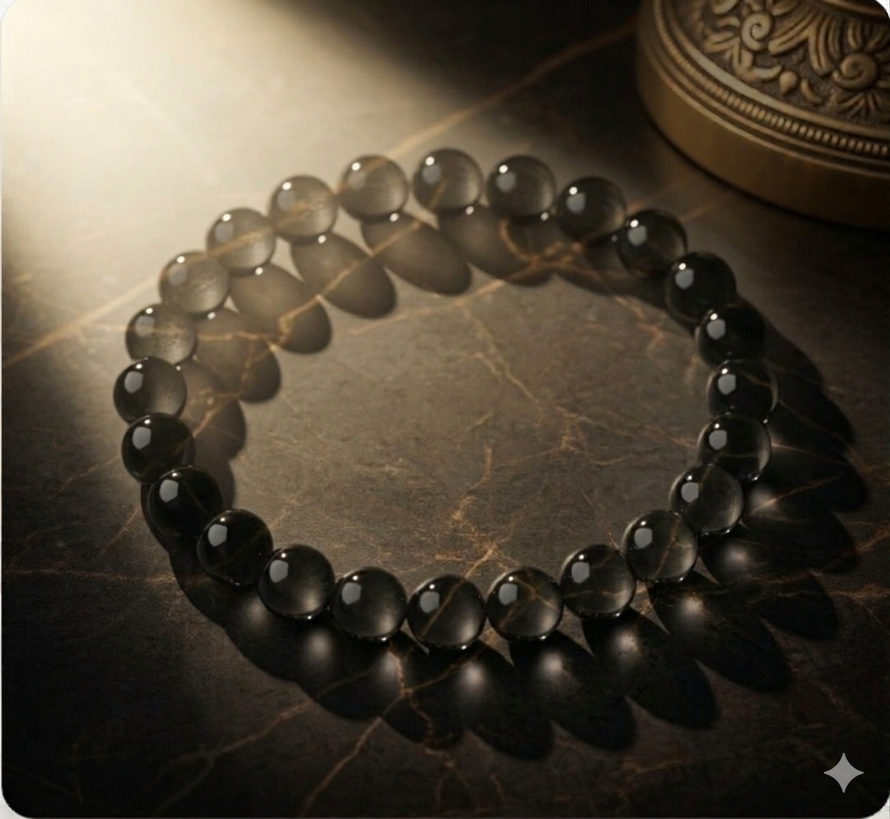
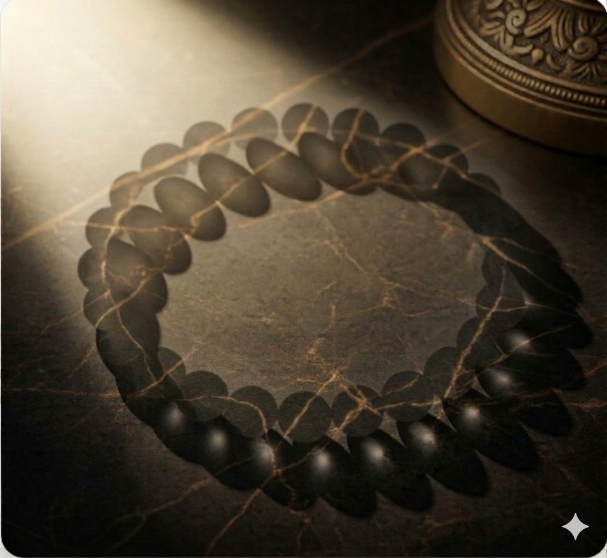
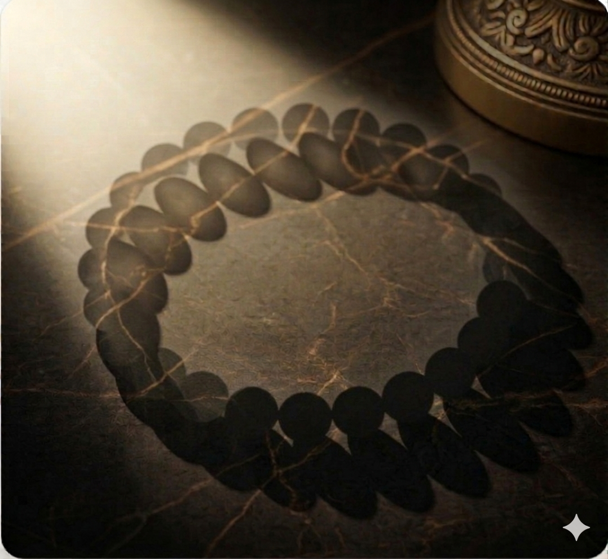

%100 Doğal Taş
Gerçek doku ve renkleriyle özenle seçilmiş doğal taşlar.
Doğal Zarafet
Premium doğal taşlar arasından seçiminizi yapın, tamamen size özel bir bileklik tasarlayın. Özenle hazırlanır, her gün keyifle takılır.

Pembe Kuvars + Ametist + Beyaz Yeşim
Gerçek doku ve renkleriyle özenle seçilmiş doğal taşlar.
Her bileklik, ustalarımız tarafından küçük partilerle hazırlanır.
Taşları niyetinize ve stilinize göre dilediğiniz gibi kombinleyin.
Çok Satanlar

Ametist, Beyaz Yeşim ve inci detayları.

Pembe Kuvars ve Rodonit, zarif ara taş detaylarıyla.

Kaplan Gözü, Lav Taşı ve Dumanlı Kuvars karışımı.
Tasarım Stüdyosu
Bir taş seçin, ardından bileklik boncuklarına tıklayarak uygulayın. Kendi renk akışınızla yüksek detaylı 3D doğal taş bilekliğinizi hazırlayın.
İpucu: Seçtiğiniz taşı yerleştirmek için herhangi bir boncuğa tıklayın.
Hikayemiz
Takının anlam taşıması gerektiğine inanan küçük bir atölye olarak başladık. Her bileklikte doğal güzelliği ve bilinçli işçiliği birleştirerek günlük yaşama zarafet, huzur ve güven katıyoruz.

"Bir bileklik sadece güzel görünmemeli; kişisel hissettirmeli ve sizin hikayenizi taşımalı."